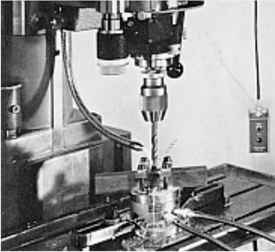

INTRODUCTIONThe growing need to reduce the undesirable stop times, caused by tool changing due to its breakage, aiming the reduction of preventive maintenance costs, leads us to search the use of systems that can provide the real cutting tool situation. Generally, wearing measurement is done directly on the drilling tool through adjusted optical methods, having the necessity to stop the process, generating unproductive periods. Aiming to reduce such times, it is proposed the on-line monitorization of the tool condition on drilling process trough indirect measure of wear and damage. OBJECTIVESTo develop and implement an effective procedure to monitor on-line drilling, thence correlation indirect measurements (acoustic emission and strength), so it’s possible to detect drilling tool condition (wearing and/or breakage) in process. RESEARCH DEVELOPMENTMore frequently used wears to establish the end of drilling tools life, which will be monitorized, are the flank, guide and transversal edge wearing. The detection will be measured through sensors located strategically in the machine, which will inform the damage thence feed force signals detection (FZ), torsion moment (MZ), and acoustic emission (EA) generated in drilling process. The obtained signals by the different sensors are duly treated to later tool life quantification.
(1) drilling machine, (2) drill, (3) piezoelectric platform, (4) acoustic emission sensor, (5) work piece, (6) clamping device, (7) charge amplifiers, (8) filters A/D, (9) data acquisition plate, (10) computer. The monitorization system in question aims at providing:
 The main advantages on the research development are in fact that small cares in a process can take us to considerable gain of practical and technological effects. This way, it is desired to obtain an efficient procedure to monitor drilling, for possible further applications on shop floor. |

| Contact: SIMAP Walter Lindolfo Weingaertner Prof. Dr.-Ing |
Last update 21.07.2006 |